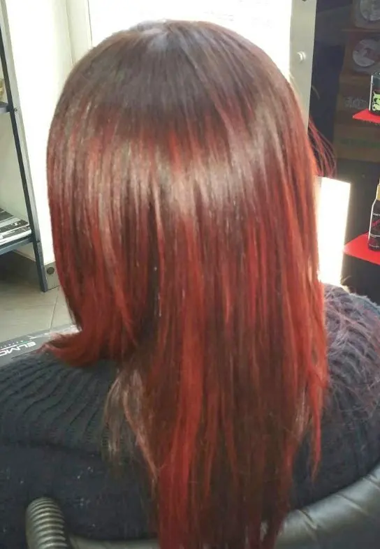

New look
La settimana scorsa è stato il mio compleanno e per l'evento, uno dei tanti regali che mi è stato fatto, è ststo un New look.. Nuovo colore ai capelli.. così, tanto per cambiare e per rinfrescarci un pò.
Ebbene sì, dal mio normalissimo castano sono passata a un rosso vinaccia.
Riflessi però eh..oddio si vedono tanto ma sono riflessi.. :D
Mi sono totalmente affidata alle mani del mio parrucchiere di fiducia e devo dire che per me che il rosso sui capelli è out, questa tonalità mi piace tanto..
È stata usata una delle nuove tecniche, che vengono divise grandi ciocche di capelli su un enorme cappello appoggiato in testa, chiamato sombrero proprio per la forma che ha.
Che poi credo sia più uno shatush. Proprio perché non partono dalla radice e vanno ad intensificarsi verso le punte.
La cosa che mi piace di questi riflessi è proprio il fatto che non partendo dalla radice, non sarò obbligata a rifare la ricrescita quando cresceranno i capelli e così non si vedrà questo distacco da fare un brutto effetto.
Ok, soddisfatta del risultato, parlato del come viene fatta, per sommi capi, io passo a mostrarvi il risultato.
et voilà:
